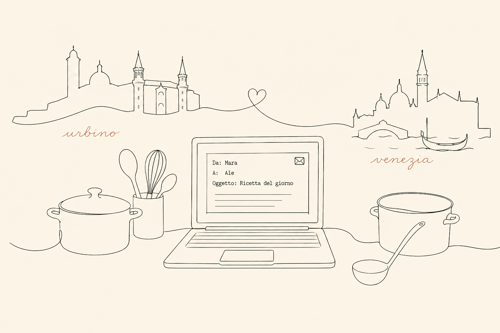

{{ t.brand }}
Home
{{ t.navRecipes }}
{{ t.navCal }}
{{ t.navStory }}
{{ t.navContact }}
IT
/
EN
{{ t.heroKicker }}
{{ t.brand }}
{{ t.tagline }}

{{ n }}
{{ t.storyHead }}
{{ para }}
{{ t.sign }}
{{ t.readMore }}
{{ t.recipeKicker }}
{{ t.recipeName }}
{{ t.recipeMeta }}
{{ t.photoRecipe }}
{{ t.recipeNote }}
{{ t.recipeLink }}
{{ t.diaryHead }}
{{ t.diaryLinkTitle }}
{{ t.diaryLinkSub }}
{{ t.diaryLinkCta }}
{{ t.recentHead }}
{{ re.date }}
{{ re.name }}
{{ t.footer }}
{{ t.privacyLink }}